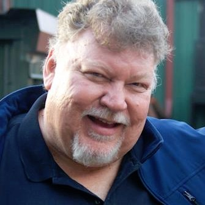
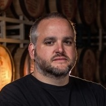
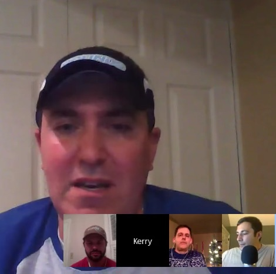
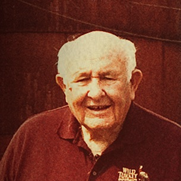
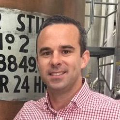

-
EPISODE
081
01.13.17
31:11
Ryan Ashley, COO and Director of Distillery Operations, talks about how his history of beer brewing led him to distillation, the Four Roses brand, distillery expansion, and even hints at a possible Four Roses Rye. Read Show Notes
- Today's Guest co-host is Linden Ferguson
- Talk about your past. Where did you grow up and your education, family influence, all that
- You’ve been known to be a big beer guy.
- What got you into bourbon?
- Talk about your job for a few minutes and your responsibilities
- So before we get into it, I think this is a good time to re-introduce Four Roses to people. So talk about the uniqueness of four roses with the two yeast strains, 10 recipes, warehouses, etc
- This big news is that Four Roses is investing $55 Million into expanding operations. And we have all been in remodeling projects so we know that you need to budget 15%, so we’ll say 63million. talk about that
- From Michael Leeper on Facebook, What kind of issues do you struggle with as you scale up distillation?, "How do you ensure raw ingredients are available to meet your need (from grain, to glass, to packaging and ultimately labor)", "Is there a limit to how big you can grow within the Bourbon region?"
- Talk about working with Brent Elliott
- Are you a stout guy or hops guy?
-
EPISODE
080
01.06.17
67:55
Chuck Cowdery, Bourbon Author and media pundit, joins to talk about Jim Beam backpedaling it’s way out of Booker’s price increase and the unique purchases Sazerac is making to expand their footprint. Read Show Notes
- Talk about how you got into bourbon in the beginning
- Give the listeners a quick background on your books
- The Booker's thing is on everyone's mind and you had a article calling their actions dumb and embarrassing
- Sazerac has purchased the Popcorn Sutton, a building in downtown New Orleans and more recently. Possibly attributed due to the success of Fireball. What’s on the horizon for them?
- Chuck on Facebook
- http://chuckcowdery.blogspot.com

-
EPISODE
079
12.30.16
42:55
John Little, VP and Head Distiller at Smooth Ambler, talks about the how the whole operation started from a note his father-in-law gave him from Time magazine. John dives into the roots of his current distillation and the single barrels seen on the market. Read Show Notes
- Talk a little about your past and how you got into Whiskey
- What made you want to start a bourbon company a long time ago outside of KY?
- Talk about Smooth Ambler for a bit and what you offer
- Talk about the name behind it as well. Smooth Ambler, Contradiction, Old Scout, etc;
- So how did you learn about the distilling process since you didn’t have a background in it?
- You all don’t hide the fact that a lot of what’s on the market today is sourced from MGP. But there was a question that was brought up by Ryan Lintz that asked “Why Does SA MGP sourced bourbon taste so much better than others? Is it because it’s bottled at Cask Strength? Or is it a mental hype train thing?”
- The Old Scout store picks have had wild success. It seems like people can’t get enough of them
- Are we ever going to see Very Old Old Scout again?
- The biggest news as of late was Pernod Ricard has taken a majority stake in your company. First off, congratulations. I hope we’re going to see a new ferrari in your driveway soon, but what does this mean for your business.
Sir Pickles - Enough Said pic.twitter.com/bLD49DNeUy
— Smooth Ambler (@SmoothAmbler) January 7, 2015 -
EPISODE
078
12.23.16
65:37
This one is going to be a heater in December! Join Bourbon Pursuit along with bloggers from Bourbonr, Subrourbia, and Sipp'n Corn to talk about these following questions and a 2016 Year in Review: Read Show Notes
- Let's bring the heat. What the hell is Beam doing?!
- On the last episode we talked about gifting bourbon in the $50 or $100 range. Now, what bourbons do you "want" to be gifted if you had the choice?
- Was 2016 a year of dud bourbons?
- What was one thing you were happy about and one thing that pissed you off in 2016?
-
EPISODE
077
12.16.16
61:31
Jimmy Russell, Master Distiller and Legend at Wild Turkey, sits down to tell his story. He thinks he’s “Plain Ol’ Jimmy” but once you hear his stories about childhood, befriending the likeness of greats in the industry, and sharing his wealth of knowledge you will see he really is an icon. Read Show Notes
- I want to talk about your history before Wild Turkey.
- Talk a little bit about your childhood and upbringing. Sports, basketball, track, baseball.
- I know your father and grandfather were in this whiskey business, is that why you got into the bourbon industry?
- Were you always around bourbon?
- What made you come to Wild Turkey in beginning?
- What was the state of Wild Turkey when you joined?
- How big was the operation?
- Who were your mentors?
- How have you embraced a lot of modern distillation techniques with computers and automation taking over?
- What was life like for you before the boom?
- Did you ever make any radical changes to Wild Turkey?
- You were best friends with the greatest minds in the industry before bourbon was cool. Talk about the comradery between people like you, Elmer, Booker, and the like.
- Now that bourbon is in the spotlight, are you hesitant on taking a backseat because at 82 years old, you won’t stop and you continue to travel to talk about Wild Turkey.
- Your son Eddie now has taken the spot light. What’s it mean to you that you get to trust the business to him?
- From @bourbonooga: Do they wish the old distillery was still down by where Warehouse A sits?
- From @Primo55: The eternal debate: Cheesy Gold Foil 12yr or Split Label 12 yr?
- What do you think is the best product that ever came out of here?
- Give us your thoughts on the 6-8 vs older aged bourbons?
- From @BreakingBourbon: Share a drink with anyone past/present/future who would it be and why?
- What are some of those things that you want to leave as a legacy?
-
EPISODE
076
12.09.16
31:23
Kevin Didio, Manager of Kentucky Visitor Experience at Bulleit Frontier Experience, talks about his career in bourbon with multiple distilleries, dives into the history of Stitzel-Weller and IW Harper, and talks about the visitor attractions you can see at the reinstated Stitzel-Weller Distillery. Read Show Notes
- Talk about your role here at the Bulleit Frontier.
- Before we talk about some of the other positions you've held, Talk about how you got into bourbon. I found my calling in college, what about you?
- Talk about your career with various players in the industry
- Talk about more about your time at Jim Beam and what you were doing
- This is also the historic site of the Old Fitzgerald / Stitzel-Weller Distillery. Now, we do have a lot of people listening for the education, so talk about the history of the distillery itself.
- Can you comment on what you think made people Stitzel-Weller crazy?
- Talk about what's happening on the grounds here today. Distillation? Aging? Bottling? Brands?
- Is there a possibility that Bulleit can have the same product as the famed Stitzel-Weller?
- Talk about the bottling happening here
- Give people the small run-down of Bulleit history
- Talk about Blade and Bow
- It's a bit of an odd duck here because this is owned by Diageo. You've got a whole heap of brands that you can talk about. Bulleit, IW Harper, Orphan Barrels, blade and Bow etc. Talk about which one of those you have a bigger fascination with and why
- At this point, I guess we never talked about some IW Harper history. Can you school us there?
- Talk about a typical tour done here?
- How can people schedule tours?
MORE EPISODES
→